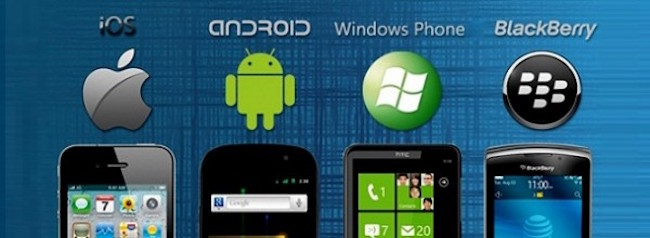

手機系統的起源
如同在
手機的歷史
中已經提過的，
手機系統一開始幾乎是完全照抄電腦的系統。當時搭載微軟Windows Mobile作業系統的HTC Touch系列便是代表。
但是如果只是移植，手機畢竟不是電腦，問題也還是層出不窮。此時一個比較獨立完整的系統才在2007年由蘋果公司發表。
iOS系統
其實，最初蘋果公司並沒有給隨iPhone發行的iOS一個獨立的稱謂，直到2008年才取名為iPhone OS，並於2010年6月改名為iOS。
一開始就只是隨著發行的iPhone附上系統。而時至今日也已經發行至iOS9了，基本上只要你的iPhone機種不要太老舊，還在蘋果公司的支援範圍內，
都可以免費升級最新的iOS系統。
特色
搭載iOS的iPhone是第一台擁有多點觸控的智慧型手機，也成為後來各家爭相模仿的對象。再來就是螢幕見面的DOCK也是iOS的一大特色，
簡潔的方格在螢幕的最下方出現，可讓使用者放置最常使用的應用程式。在安全性方面因為開放較少權限給使用者和開發者，所相對安全很多，基本上不用太擔心安全性的問題。
雖今日有許多大陸軟體夾雜iOS專屬病毒的傳言，但良好使用習慣背上iOS本身嚴格把關，安全性還是值得相信。
專屬的內建程式
App store : iOS專屬的應用商店，所有免費或付費的官方上架軟體都必須在這裡下載，上架審核嚴格但是相對安全許多。
Safari : iOS專屬的網頁瀏覽器。
Facetime : iOS專屬的視訊通話軟體
Siri : 人工智慧語音助理軟體，為iOS一大突破，流暢的對話和強大搜尋能力為iOS吸引不少使用者。
iTunes : iOS的音樂軟體，可收納分類大量音樂和專輯。
Android系統
一個以Linux為基礎開發的開放原始碼行動作業系統，多用於智慧型手機和平板上。現由Google領銜開發中，
但其實最早的開發者並不是屬於Google公司。Android系統最初由安迪·魯賓（Andy Rubin）等人開發製作，
一開始只是要製作數位相機相關的作業系統。而後該公司被Google併吞後，Android系統由Google與84家硬體製造商、
軟體開發商及電信營運商成立開放手機聯盟來共同研發改良。Android系統為一開放原始碼的系統，所以相關發展迅速，勢不可擋。
僅正式推出兩年的Android系統在市場佔有率上已經超越原先稱霸逾十年的諾基亞Symbian系統，儼然成為全球第一大智慧型手機作業系統
特色
自由開放的程式編碼，讓開發者可以在限制較小的環境下開發出更加多樣化的程式。使得多數非蘋果公司的手機都選擇搭載
Android系統，在市場眾多的情況下，吸引更多開發者投入而營造更佳的使用者體驗環境。目前由Google公司所管理的Android系統
版本已經發表到了第六代 Marshmallow 棉花餹。
Android系統的應用程式多可由Google的Play商店中下載，但由於權限限制不多，所以亦可以輕鬆透過第三方軟體下載安裝。
此舉也顯示出Android系統安全性就不足的隱憂。但在開發者眼中，Android是一個較為友善的開發環境。
CS.UTaipei_WEB